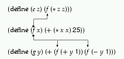
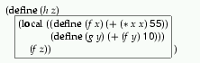
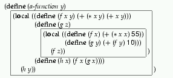

Intermediate
Student
Intermediate Student |
Programs do not just consist of single definitions. In many cases, a program requires the definition of auxiliary functions or of functions with mutual references. Indeed, as we become more experienced, we write programs that consist of numerous auxiliary functions. If we are not careful, these large collections of functions overwhelm us. As the size of our functions grows, we need to organize them so that we (and other readers) can quickly identify the relationships between parts.
This section introduces local, a simple construct for organizing
collections of functions. With local, a programmer can group
function definitions that belong together so that readers immediately
recognize the connection between the functions. Finally, the introduction of
local also forces us to discuss the concept of variable
binding. While the variable and function definitions of Beginning
Student Scheme already introduce bindings into a program, a good
understanding of
local definitions is possible only with a thorough familiarity of
this concept.
A local-expression groups together an arbitrarily long sequence of definitions similar to those found in the Definitions window. Following our established rules, we first introduce the syntax and then the semantics and pragmatics of local-expressions.
A local-expression is just another kind of expression:
|
local, followed by a sequence of definitions
grouped with ( and ), followed by an expression.
|
The keyword local distinguishes this new class of expressions from
other expressions, just as cond distinguishes conditional
expressions from applications. The parenthesized sequence that follows
local is referred to as the LOCAL
DEFINITION
.The definitions are called the LOCALLY DEFINED
variables, functions, or structures. All those in the
Definitions
window are called TOP-LEVEL DEFINITIONS.
Each name may occur at
most once on the left-hand side, be it in a variable definition or a
function definition. The expression in each definition is called the
RIGHT-HAND SIDE expression.
The expression that follows the definitions is the BODY.
Let us take a look at an example:
(local ((define (f x) (+ x 5)) (define (g alon) (cond [(empty? alon) empty] [else (cons (f (first alon)) (g (rest alon)))]))) (g (list 1 2 3)))
The locally defined functions are f and g. The right-hand
side of the first function definition is (+ x 5); the second one is
(cond [(empty? alon) empty] [else (cons (f (first alon)) (g (rest alon)))])
Finally, the body of the local-expression is (g (list 1 2 3)).
Exercise 18.1.1. Circle the locally defined variables and functions in red, the right-hand sides in green, and the body of the following local-expression in blue:
1. (local ((define x (* y 3))) (* x x))
2. (local ((define (odd an) (cond [(zero? an) false] [else (even (sub1 an))])) (define (even an) (cond [(zero? an) true] [else (odd (sub1 an))]))) (even a-nat-num))
3. (local ((define (f x) (g x (+ x 1))) (define (g x y) (f (+ x y)))) (+ (f 10) (g 10 20)))
Exercise 18.1.2. The following phrases are not syntactically legal:
1. (local ((define x 10) (y (+ x x))) y)
2. (local ((define (f x) (+ (* x x) (* 3 x) 15)) (define x 100) (define [email protected] (f x))) [email protected] x)
3. (local ((define (f x) (+ (* x x) (* 3 x) 14)) (define x 100) (define f (f x))) f)
Explain why!  Solution
Solution
Exercise 18.1.3. Determine which of the following definitions or expressions are legal and which ones are not:
1. (define A-CONSTANT (not (local ((define (odd an) (cond [(= an 0) false] [else (even (- an 1))])) (define (even an) (cond [(= an 0) true] [else (odd (- an 1))]))) (even a-nat-num))))
2. (+ (local ((define (f x) (+ (* x x) (* 3 x) 15)) (define x 100) (define [email protected] (f x))) [email protected]) 1000)
3. (local ((define CONST 100) (define f x (+ x CONST))) (define (g x y z) (f (+ x (* y z)))))
Explain why each expression is legal or illegal.  Solution
Solution
The purpose of a local-expression is to define a variable, a function, or a structure for the evaluation of the body expression. Outside of the local-expression the definitions have no effect. Consider the following expression:
(local ((define (f x) exp-1)) exp)
It defines the function f during the evaluation of exp.
The result of exp is the result of the entire
local-expression. Similarly,
(local ((define PI 3)) exp)
temporarily lets the variable PI stand for 3 during the
evaluation of exp.
We can describe the evaluation of local-expressions with a single rule, but the rule is extremely complex. More specifically, the rule requires two steps in a hand-evaluation. First, we must systematically replace all locally defined variables, functions, and structures so that the names do not overlap with those used in the Definitions window. Second, we move the entire sequence of definitions to the top level and proceed as if we had just created a new function.
Here is the evaluation rule, stated symbolically:
def-1 ... def-n E[(local ((define (f-1 x) exp-1) ... (define (f-n x) exp-n)) exp)] = def-1 ... def-n (define (f-1' x) exp-1') ... (define (f-n' x) exp-n') E[exp'] |
def-1 ... def-n represents top-level
definitions.
The unusual part of the rule is the notation E[exp]. It represents
an expression exp and its context E. More specifically,
exp is the next expression that must be evaluated; E is
called its EVALUATION CONTEXT.
For example, the expression
(+ (local ((define (f x) 10)) (f 13)) 5)
is an addition. Before we can compute its result, we must evaluate the two subexpressions to numbers. Since the first subexpression is not a number, we focus on it:
(local ((define (f x) 10)) (f 13))
This local-expression must and can be evaluated, so
exp = (local ((define (f x) 10)) (f 13)) E = (+ ... 5) |
On the right-hand side of the rule for local, we can see several
primed names and expressions. The primed names f-1', ...,
f-n' are new function names, distinct from all other names in
top-level definitions; the primes on the expressions exp-1',
..., exp-n' indicate that these expressions are structurally
identical to exp-1, ..., exp-n but contain
f-1' instead of f-1, etc.
The evaluation rule for local-expressions is the most complex rule that we have encountered so far, and indeed, it is the most complex rule that we will ever encounter. Each of the two steps is important and serves a distinct purpose. Their purpose is best illustrated by a series of simple examples.
The first part of the rule eliminates name clashes between names that are already defined in the top-level environment and those that will be inserted there. Consider the following example:
(define y 10) (+ y (local ((define y 10) (define z (+ y y))) z))
The expression introduces a local definition for y, adds
y to itself to get z, and returns the value of
z.
The informal description of local says that the result should be
30. Let's verify this with our rule. If we simply added the
definitions in local to the top level, the two definitions for
y would clash. The renaming step prevents this clash and clarifies
which of the y's belong together:
= (define y 10) (+ y (local ((define y1 10) (define z1 (+ y1 y1))) z1)) = (define y 10) (define y1 10) (define z1 (+ y1 y1)) (+ y z1) = (define y 10) (define y1 10) (define z1 20) (+ 10 z1) = (define y 10) (define y1 10) (define z1 20) (+ 10 20)
As expected, the result is 30.
Since local-expressions may occur inside of function bodies, renaming is important if such functions are applied more than once. The following second example illustrates this point:
(define (D x y) (local ((define x2 (* x x)) (define y2 (* y y))) (sqrt (+ x2 y2)))) (+ (D 0 1) (D 3 4))
The function D computes the square root of the sum of the squares
of its arguments. Hence the result of (+ (D 0 1) (D 3 4)) should
be 6.
As D computes its answer, it introduces two local variables:
x2 and y2. Since D is applied twice, a modified
version of its body is evaluated twice and therefore its local definitions
must be added to the top-level twice. The renaming step ensures that no
matter how often we lift such definitions, they never interfere with each
other. Here is how this works:
= (define (D x y) (local ((define x2 (* x x)) (define y2 (* y y))) (sqrt (+ x2 y2)))) (+ (local ((define x2 (* 0 0)) (define y2 (* 1 1))) (sqrt (+ x2 y2))) (D 3 4))
The expression (D 0 1) is evaluated according to the regular rules.
Now we rename and lift the local definitions:
= (define (D x y) (local ((define x2 (* x x)) (define y2 (* y y))) (sqrt (+ x2 y2)))) (define x21 (* 0 0)) (define y21 (* 1 1)) (+ (sqrt (+ x21 y21)) (D 3 4))
From here, the evaluation proceeds according to the standard rules until we encounter a second nested local-expression in the expression that we are evaluating:
= (define (D x y) (local ((define x2 (* x x)) (define y2 (* y y))) (sqrt (+ x2 y2)))) (define x21 0) (define y21 1) (+ 1 (local ((define x2 (* 3 3)) (define y2 (* 4 4))) (sqrt (+ x2 y2))))
= (define (D x y) (local ((define x2 (* x x)) (define y2 (* y y))) (sqrt (+ x2 y2)))) (define x21 0) (define y21 1) (define x22 9) (define y22 16) (+ 1 (sqrt (+ x22 y22)))
By renaming x2 and y2 again, we avoided clashes. From
here, the evaluation of the expression is straightforward:
(+ 1 (sqrt (+ x22 y22))) = (+ 1 (sqrt (+ 9 y22))) = (+ 1 (sqrt (+ 9 16))) = (+ 1 (sqrt 25)) = (+ 1 5) = 6
The result is 6, as expected.44
Exercise 18.1.4.
Since local definitions are added to the
Definitions
window during an evaluation, we might wish to try to see their values by
just typing in the variables into the Interactions
window. Is this
possible? Why or why not?  Solution
Solution
Exercise 18.1.5. Evaluate the following expressions by hand:
1. (local ((define (x y) (* 3 y))) (* (x 2) 5))
2. (local ((define (f c) (+ (* 9/5 c) 32))) (- (f 0) (f 10)))
3. (local ((define (odd? n) (cond [(zero? n) false] [else (even? (sub1 n))])) (define (even? n) (cond [(zero? n) true] [else (odd? (sub1 n))]))) (even? 1))
4. (+ (local ((define (f x) (g (+ x 1) 22)) (define (g x y) (+ x y))) (f 10)) 555)
5. (define (h n) (cond [(= n 0) empty] [else (local ((define r (* n n))) (cons r (h (- n 1))))])) (h 2)
The evaluations should show all
local-reductions.  Solution
Solution
The most important use of local-expressions is to ENCAPSULATE a collection of functions that serve one purpose. Consider for an example the definitions for our sort function from section 12.2:
;;sort : list-of-numbers -> list-of-numbers(define (sort alon) (cond [(empty? alon) empty] [(cons? alon) (insert (first alon) (sort (rest alon)))])) ;;insert : number list-of-numbers (sorted) -> list-of-numbers(define (insert an alon) (cond [(empty? alon) (list an)] [else (cond [(> an (first alon)) (cons an alon)] [else (cons (first alon) (insert an (rest alon)))])]))
The first definition defines sort per se, and the second one defines
an auxiliary function that inserts a number into a sorted list of numbers.
The first one uses the second one to construct the result from a natural
recursion, a sorted version of the rest of the list, and the first
item.
The two functions together form the program that sorts a list of numbers. To
indicate this intimate relationship between the functions, we can, and should,
use a local-expression. Specifically, we define a program
sort that immediately introduces the two functions as auxiliary
definitions:
;; sort : list-of-numbers -> list-of-numbers
(define (sort alon)
(local ((define (sort alon)
(cond
[(empty? alon) empty]
[(cons? alon) (insert (first alon)
(sort (rest alon)))]))
(define (insert an alon)
(cond
[(empty? alon) (list an)]
[else (cond
[(> an (first alon)) (cons an alon)]
[else (cons (first alon)
(insert an (rest alon)))])])))
(sort alon)))
Here the body of local-expressions simply passes on the argument
to the locally defined function sort.
| Guideline on the Use of local |
Develop a function following the design recipes.
If the function requires the use of auxiliary definitions, group
them in a local-expression and put the local-expression into a new
function definition. The body of the |
Exercise 18.1.6.
Evaluate (sort (list 2 1 3)) by hand until the locally defined
sort function is used. Do the same for (equal? (sort (list
1)) (sort (list 2))).  Solution
Solution
Exercise 18.1.7.
Use a local expression to organize the functions for moving
pictures from section 10.3.  Solution
Solution
Exercise 18.1.8.
Use a local expression to organize the functions for drawing a
polygon in figure 34.  Solution
Solution
Exercise 18.1.9.
Use a local expression to organize the functions for rearranging
words from section 12.4.  Solution
Solution
Exercise 18.1.10.
Use a local expression to organize the functions for finding
blue-eyed descendants from
section 15.1.  Solution
Solution
Suppose we need a function that produces the last occurrence of some item in a list. To be precise, assume we have lists of records of rock stars. For simplicity, each star is represented as a pair of values:
(define-struct star (name instrument))
A star (record) is a structure:
(make-star s t) s and t are symbols.Here is an example:
(define alos (list (make-star 'Chris 'saxophone) (make-star 'Robby 'trumpet) (make-star 'Matt 'violin) (make-star 'Wen 'guitar) (make-star 'Matt 'radio)))
This list contains two occurrences of 'Matt. So, if we wanted to
determine the instrument that goes with the last occurrence of
'Matt, we would want 'radio. For 'Wen, on the
other hand, our function would produce 'guitar. Of course, looking
for the instrument of 'Kate should yield false to
indicate that there is no record for 'Kate.
Let's write down a contract, a purpose statement, and a header:
;;last-occurrence : symbol list-of-star -> star or false;; to find the last star record inalostarsthat containssinnamefield (define (last-occurrence s alostars) ...)
The contract is unusual because it mentions two classes of data to the
right of the arrow: star and false. Although we haven't
seen this kind of contract before, its meaning is obvious. The function may
produce a star or false.
We have already developed some examples, so we can move directly to the template stage of our design recipe:
(define (last-occurrence s alostars) (cond [(empty? alostars) ...] [else ... (first alostars) ... (last-occurrence s (rest alostars)) ...]))
The real problem with this function, of course, shows up only when we want
to fill in the gaps in this template. The answer in the first case is
false, per specification. How to form the answer in the second case
is far from clear. Here is what we have:
(first alostars) is the first star record on the
given list. If its name field is equal to s, it may or may not
be the final result. It all depends on the records in the rest of the
list.
(last-occurrence s (rest alostars)) evaluates to one of two
things: a star record with s as the name field or
false. In the first case, the star record is the result;
in the second case, the result is either false or the first
record.
The second point implies that we need to use the result of the natural
recursion twice, first to check whether it is a star or a
boolean, and second, to use it as the answer if it is a
star.
The dual-use of the natural recursion is best expressed with a local-expression:
(define (last-occurrence s alostars) (cond [(empty? alostars) false] [else (local ((define r (last-occurrence s (rest alostars)))) (cond [(star? r) r] ...))]))
The nested local-expression gives a name to the result of the
natural recursion.
The cond-expression uses it twice. We could
eliminate the local-expression by replacing r with the
right-hand side:
(define (last-occurrence s alostars) (cond [(empty? alostars) false] [else (cond [(star? (last-occurrence s (rest alostars))) (last-occurrence s (rest alostars))] ...)]))
But even a superficial glance shows that reading a natural
recursion
twice is difficult. The version with local is superior.
From the partially refined template it is only a short step to the full definition:
;;last-occurrence : symbol list-of-star -> star or false;; to find the last star record inalostarsthat containssinnamefield (define (last-occurrence s alostars) (cond [(empty? alostars) false] [else (local ((define r (last-occurrence s (rest alostars)))) (cond [(star? r) r] [(symbol=? (star-name (first alostars)) s) (first alostars)] [else false]))]))
The second clause in the nested cond-expression compares the first
record's name field with s if r is not a
star record. In that case, there is no record with the matching
name in the rest of the list, and, if the first record is the appropriate
one, it is the result. Otherwise, the entire list does not contain the name
we're looking for and the result is false.
Exercise 18.1.11. Evaluate the following test by hand:
(last-occurrence 'Matt (list (make-star 'Matt 'violin) (make-star 'Matt 'radio)))
How many local-expressions are lifted?  Solution
Solution
Exercise 18.1.12. Consider the following function definition:
;;maxi : non-empty-lon -> number;; to determine the largest number onalon(define (maxi alon) (cond [(empty? (rest alon)) (first alon)] [else (cond [(> (first alon) (maxi (rest alon))) (first alon)] [else (maxi (rest alon))])]))
Both clauses in the nested cond-expression compute (maxi (rest
an-inv)), which is therefore a natural candidate for a local-expression. Test
both versions of maxi with
(list 1 2 3 4 5 6 7 8 9 10 11 12 13 14 15 16 17 18 19 20)
Explain the effect.  Solution
Solution
Exercise 18.1.13.
Develop the function to-blue-eyed-ancestor. The function consumes
a family tree (ftn) (see section 14.1) and
produces a list that explains how to get to a blue-eyed ancestor. If there
is no blue-eyed ancestor, the function produces false.
The function's contract, purpose statement, and header are as follows:
;;to-blue-eyed-ancestor : ftn -> path or false;; to compute the path froma-ftntree to a blue-eyed ancestor (define (to-blue-eyed-ancestor a-ftn) ...)
A path is a list of 'father and 'mother, which we call
a direction. Here are the two data definitions:
the symbol 'father or
the symbol 'mother .
empty or
(cons s los) where s is a direction and
los is a path.
The empty path indicates that a-ftn has 'blue
in the eyes field. If the first item is 'mother, we may
search in the mother's family tree for a blue-eyed ancestor using the rest
of the path. Similarly, we search in the father's family tree if the first
item is 'father and use the rest of the path for further
directions.
Examples:
(to-blue-eyed-ancestor Gustav) produces (list
'mother) for the family tree in figure 35;
(to-blue-eyed-ancestor Adam) produces false in the
same setting; and
if we added
(define Hal (make-child Gustav Eva 'Gustav 1988 'hazel))
then (to-blue-eyed-ancestor Hal)
would yield (list 'father 'mother).
Build test cases from these examples. Formulate them as boolean
expressions, using the strategy of
section 17.8.  Solution
Solution
Backtracking: The functions last-occurrence and
to-blue-eyed-ancestor produce two kinds of results: one to
indicate a successful search and another one to indicate a failure. Both
are recursive. If a natural recursion fails to find the desired result,
each tries to compute a result in a different manner. Indeed,
to-blue-eyed-ancestor may use another natural recursion.
This strategy of computing an answer is a simple form of BACKTRACKING. In the world of data that we have dealt with so far, backtracking is simple and just a device to save computing steps. It is always possible to write two separate recursive functions that accomplish the same purpose as one of the backtracking functions here.
We will take an even closer look at backtracking in section 28. Also, we will discuss counting computing steps in intermezzo 5.
Exercise 18.1.14.
Discuss the function find from exercise 15.3.4 in terms
of backtracking.  Solution
Solution
Consider the following function definition:
;;mult10 : list-of-digits -> list-of-numbers;; to create a list of numbers by multiplying each digit onalod;; by(expt 10 p)wherepis the number of digits that follow (define (mult10 alod) (cond [(empty? alod) 0] [else (cons (* (expt 10 (length (rest alod))) (first alod)) (mult10 (rest alod)))]))
Here is a test:
(equal? (mult10 (list 1 2 3)) (list 100 20 3))
Clearly, the function could be used to convert a list of digits into a number.
A small problem with the definition of mult10 is the computation
of the first item of the result in the second clause. It is a large
expression and doesn't quite correspond to the purpose statement. By using
a local-expression in the second clause, we can introduce names
for some intermediate values in the computation of the answer:
;;mult10 : list-of-digits -> list-of-numbers;; to create a list of numbers by multiplying each digit onalod;; by(expt 10 p)wherepis the number of digits that follow (define (mult10 alon) (cond [(empty? alon) empty] [else (local ((define a-digit (first alon)) (define p (length (rest alon)))) ;; ------------------------------------------------------ (cons (* (expt 10 p) a-digit) (mult10 (rest alon))))]))
The use of names helps us understand the expression when we read the
definition again because we can study one local-definition at a
time.
The use of local for such cases is most appropriate when a value
is computed twice as, for example, the expression (rest alon) in
mult10. By introducing names for repeated expressions, we might
also avoid some (small) effort on DrScheme's side:
(define (mult10 alon) (cond [(empty? alon) empty] [else (local ((define a-digit (first alon)) (define the-rest (rest alon)) (define p (length the-rest))) ;; ------------------------------------------------------ (cons (* (expt 10 p) a-digit) (mult10 the-rest)))]))
For the programs that we have developed, this third usage of local
is hardly ever useful. An auxiliary function is almost always better. We
will, however, encounter many different styles of functions in the
remaining parts of the book and with them the opportunity, and sometimes
the necessity, to use local-expressions like the one for
mult10.
Exercise 18.1.15. Consider the following function definition:
;;extract1 : inventory -> inventory;; to create aninventoryfroman-invfor all ;; those items that cost less than $1 (define (extract1 an-inv) (cond [(empty? an-inv) empty] [else (cond [(<= (ir-price (first an-inv)) 1.00) (cons (first an-inv) (extract1 (rest an-inv)))] [else (extract1 (rest an-inv))])]))
Both clauses in the nested cond-expression extract the first item
from an-inv and both compute (extract1 (rest an-inv)).
Introduce a local-expression for these
expressions.  Solution
Solution
Check Syntax |
The introduction of local requires some additional terminology
concerning the syntax of Scheme and the structure of
functions. Specifically, we need words to discuss the usage of names for
variables, functions, and structures. For a simple example,
consider the following two definitions:
(define (fx) (+ (*xx) 25)) (define (g x) (* 12 (expt x 5)))
Clearly, the underlined occurrences of x in f are
completely unrelated to the occurrences of x in g. As
mentioned before, if we systematically replaced the underlined occurrences
with y, the function would still compute the exact same
numbers. In short, the underlined occurrences of x mean something
only in the definition of f and nowhere else.
At the same time, the first occurrence of x is different from the
others. When we apply f to a number n, this occurrence
completely disappears; in contrast, the others are replaced with
n. To distinguish these two forms of variable occurrences, we call
the one to the right of the function name BINDING
occurrence of
x and those in the body the BOUND
occurrences of
x. We also say that the binding occurrence of x binds all
occurrences of x in the body of f, and from the
discussion above, the body of f is clearly the only textual region
of the function where the underlined binding occurrence of x can
bind other occurrences. The name of this region is x's
LEXICAL SCOPE.
We also say that the definitions of f and
g (or other definitions in the
Definitions
window) have
GLOBAL SCOPE.
On occasion, people also use the word FREE OCCURRENCE.
The description of an application of f to a number
n suggests the following pictorial representation of the
definition:
The bullet over the first occurrence indicates that it is a binding occurrence. The arrow that originates from the bullet suggests the flow of values. That is, when the value of a binding occurrence becomes known, the bound occurrences receive their values from there. Put differently, when we know which is the binding occurrence of a variable, we know where the value will come from during an evaluation.
Along similar lines, the scope of a variable also dictates where we
can rename it. If we wish to rename a parameter, say, from x
to y, we search for all bound occurrences in the scope of the
parameter and replace them with y. For example, if the
function definition is the one from above:
(define (f x) (+ (* x x) 25))
renaming x to y affects two bound occurrences:
(define (f y) (+ (* y y) 25))
No other occurrences of x outside of the definitions need to
be changed.
Obviously function definitions also introduce a binding occurrence
for the function name. If a definition introduces a function named
f, the scope of f is the entire sequence of
definitions:

That is, the scope of f includes all definitions above and
below the definition of f.
Exercise 18.2.1. Here is a simple Scheme program:
(define (p1 x y) (+ (* x y) (+ (* 2 x) (+ (* 2 y) 22)))) (define (p2 x) (+ (* 55 x) (+ x 11))) (define (p3 x) (+ (p1 x 0) (+ (p1 x 1) (p2 x))))
Draw arrows from p1's x parameter to all its bound
occurrences. Draw arrows from p1 to all bound occurrences of
p1.
Copy the function and rename the parameter x of p1 to
a and the parameter x of p3 to
b.
Check the results with DrScheme's Check Syntax button.  Solution
Solution
In contrast to top-level function definitions, the scope of the definitions
in a local are limited. Specifically, the scope of local
definitions is the local-expression.
Consider the definition of an auxiliary function f in
a local-expression. It binds all occurrences within the
local-expression but none that occur outside:
The two occurrences outside of local are not bound by the local
definition of f.
As always, the parameters of a function definition, local or not, is only bound in the function's body and nowhere else:
Since the scope of a function name or a function parameter is a textual region, people often draw a box to indicate some scope. More precisely, for parameters a box is drawn around the body of a function:
In the case of a local definition, the box is drawn aorund the entire local-expression:

In this example, the box describes the scope of the definitions
of f and g.
Using a box for a scope, we can also easily understand what it means to reuse the name of function inside a local-expression:

The inner box describes the scope of the inner definition of
f; the outer box is the scope of the outer definition of
f. Accordingly, all occurrences of f in the inner box
refer to the inner local; all those in the outer box refer to the
definition in the outer local. In other words, the scope of the
outer definition of f has a hole: the inner box, which is the
scope of the inner definition of f.
Holes can also occur in the scope of a parameter definition. Here is an example:
In this function, the parameter x is used twice: for the
function f and for g. The scope of the latter is nested
in the scope of the former and is thus a hole for the scope of the outer
use of x.
In general, if the same name occurs more than once in a function, the boxes that describe the corresponding scopes never overlap. In some cases the boxes are nested within each other, which gives rise to holes. Still, the picture is always that of a hierarchy of smaller and smaller nested boxes.
Exercise 18.2.2. Here is a simple Scheme function:
;; sort : list-of-numbers -> list-of-numbers
(define (sort alon)
(local ((define (sort alon)
(cond
[(empty? alon) empty]
[(cons? alon) (insert (first alon) (sort (rest alon)))]))
(define (insert an alon)
(cond
[(empty? alon) (list an)]
[else (cond
[(> an (first alon)) (cons an alon)]
[else (cons (first alon) (insert an (rest alon)))])])))
(sort alon)))
Draw a box around the scope of each binding occurrence of sort and
alon. Then draw arrows from each occurrence of sort to
the matching binding occurrence.  Solution
Solution
Exercise 18.2.3. Recall that each occurrence of a variable receives its value from the corresponding binding occurrence. Consider the following definition:
(define x (cons 1 x))
Where is the underlined occurrence of x bound? Since the
definition is a variable definition and not a function definition, we need
to evaluate the right-hand side if we wish to work with this function. What
is the value of the right-hand side according to our
rules?  Solution
Solution
44 As we evaluate expressions in this manner, our list of definitions grows longer and longer. Fortunately, DrScheme knows how to manage such growing lists. Indeed, it occasionally throws out definitions that will never be used again.